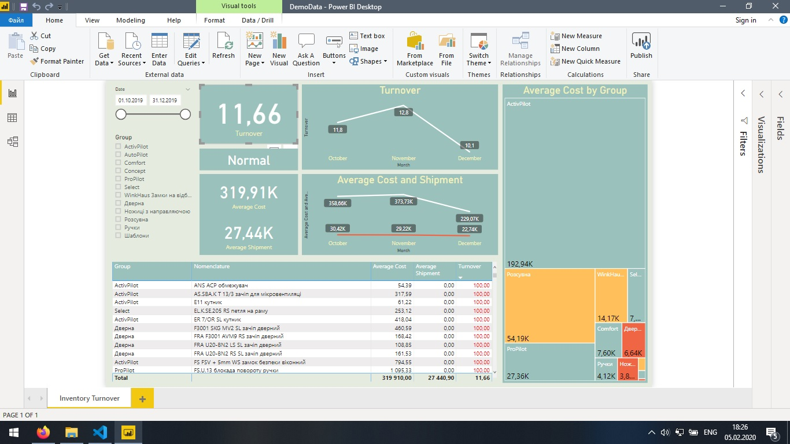
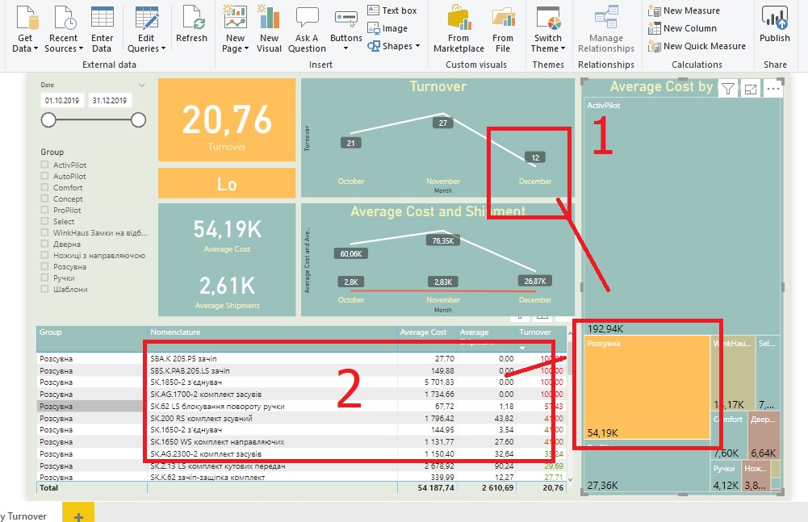
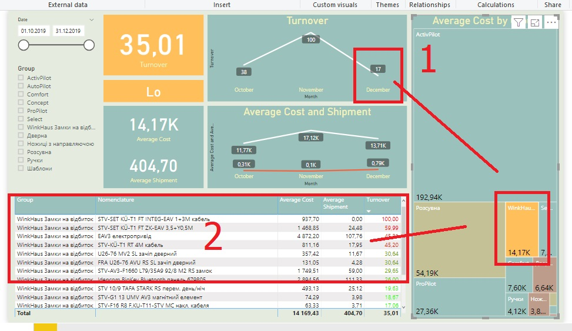
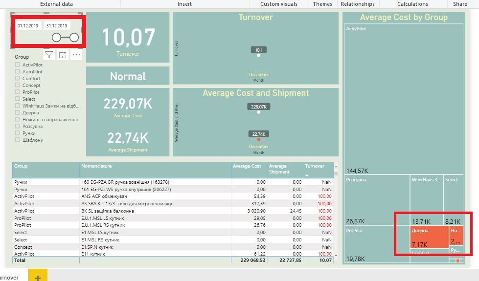
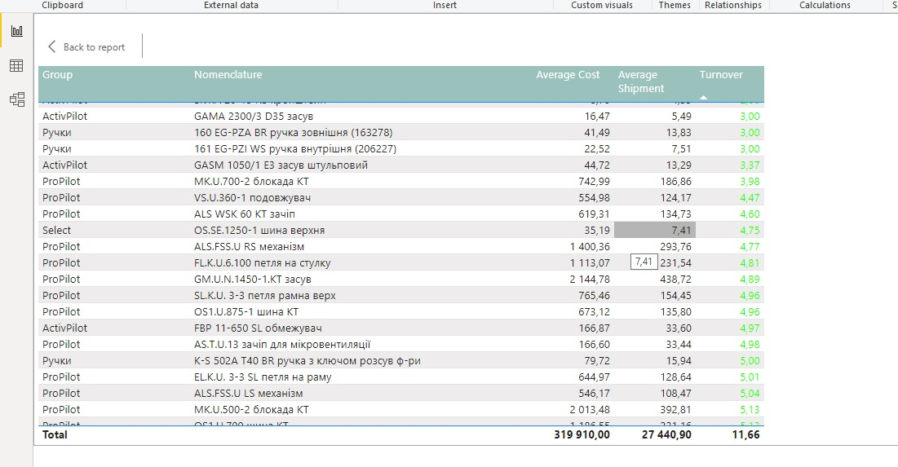

Inventory Turnover, in this particular case is measured in days showing the period of time needed to empty a warehouse.
First of all, we extract raw data from ERP. This data represents inventory state and changes between 10/2019 and 12/2019 for particular items. The raw data is saved in format of text file with such columns:
Raw data records exist at the date the changes occur. In order to calculate the average balance correctly it is needed to expand raw data records to cover the days without changes
We will transform the data with a simple Python script
Python script Transformed data fileWe load the transformed data into Power BI and create the necessary measurements there. The final visualization can be viewed in Power BI Desktop
DemoData.pbix You can explore data on this chart by selecting Date, month, Group or single Item, and all KPI's will updates. In this case Inventory Turnover rate is equal to:
The right-side chart represents average inventory cost by groups. Each group is highlighted by specific color wich relates to particular Inventory Turnover rate. So, it is possible to observe two big groups with "Low" performance.
 And take a look on the last month.
"High" rated positions also can be interesting.
Resume: